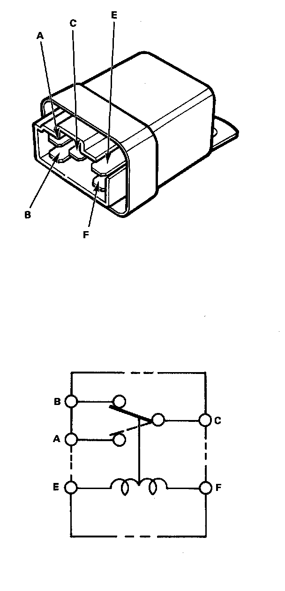

Headlamp Motor Relay: Testing and Inspection

Retractor Relay Test
There should be continuity between A and C terminals when the battery is connected to E and F terminals. There should be continuity between B and C terminals when the battery is disconnected.